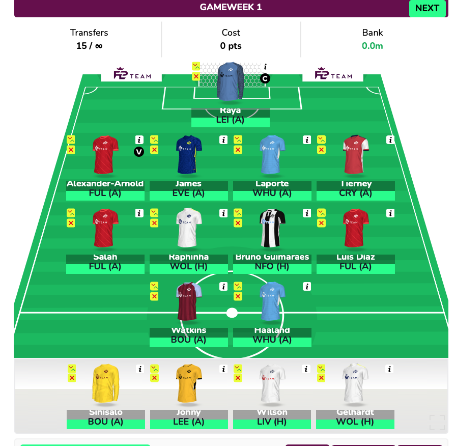

Early FPL Draft
Here is early FPL draft using FPL.Team:
- Raya: A first guarenteed starter and cheap at only £4.5. May change for Henderson if he transfers.
- TAA: Trent is essential this season he claimed 208 points last season and will likely get a smilar score this year.
- James: With 5 goals and 9 assists last season He may be another essential defender this season.
- Laporte: I've decided to go with Laporte over Cancelo as Cancelo could be a rotation risk with city looking for a new full back. A City defender is essential
with their favourable early fixtures.
- Tierney: With Arsenal favourble early fixtures I think a defender could be useful. 1 goal and 3 assists last
season although he did miss a lot through injury.
- Salah: Obvious essential.
- Raphina: Providing He goes to Arsenal and price is lower than Saka, He could be a bargain.
11 goals and 3 assists last season in a poor performing Leeds.
- Bruno Guimarães: Could be another bargain. Joined Newcastle in January and scored 5 goals
- Diaz: Now with Mane left for Bayern Munich, He has to be 1st choice for Klopp
- Watkins: I think Villa have some decent early fixtures. 11 goals last season and could be a bargain and possibly
a differential
- Haaland: 22 goals and 7 assists in the budesliga last season. May be essential.
